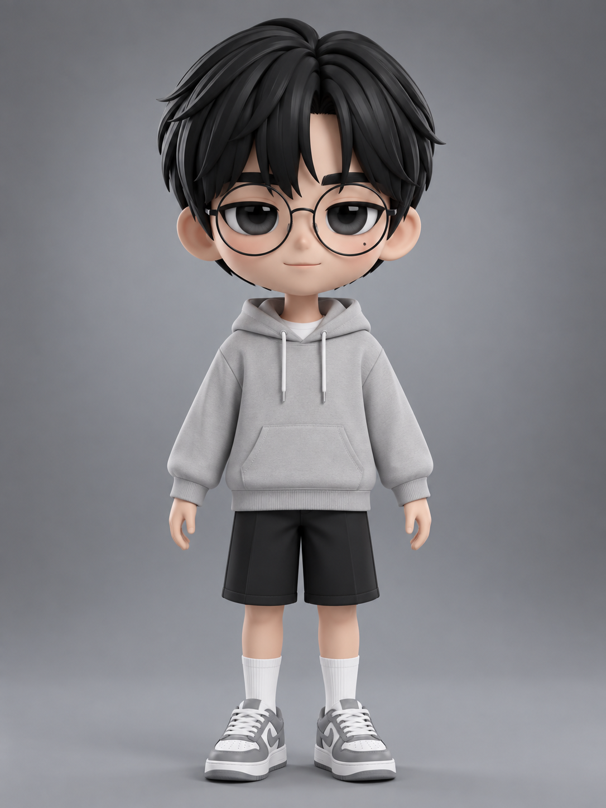
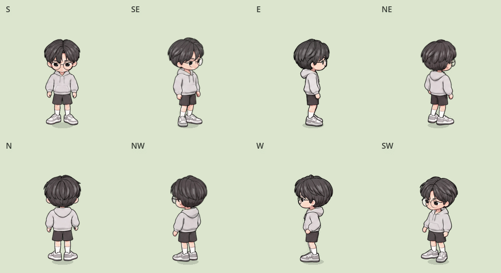

From character image to playable animation
One character.
Eight directions.
Create a character image with GPT and a 3D model with Tripo AI. Let this Codex skill handle motion, rendering, image refinement, and review—then bring the character into Godot.
{kind=link}

GPT character image
Define appearance and proportions
Tripo AI model
Turn the image into a 3D model
Codex skill production
Rig · Animate · Render · Refine · Review
Control it in Godot
Eight-direction movement and transitions
See it move in a real scene.
Idle, walk, run, roll, and jump in every direction, followed by transitions into rolls and jumps while moving.
Godot Movie Maker captures the actual running scene. Position resets happen between labeled takes; the character controller drives the actions within each take.
One character, from every angle.
GIFs use the final Godot sprite rendering, including head stabilization and idle breathing. Select an action to preview or download it.

{kind=link}
Top row: S, SE, E, NE. Bottom row: N, NW, W, SW. GIFs have a background for viewing; production assets use transparent PNGs and sprite sheets.
How this character was made
From image to game,
with checks at every stage.
This is the production process for the character shown here. The GPT image and Tripo AI model are preparation steps; this skill starts with the supplied 3D model and manages production and review.
Read the complete workflow ↗- GPT image → Tripo AI 3D model
Establish the character design, use that image in Tripo AI to generate a model, and prepare the model and textures.
- Inspect the rig → Adapt Mixamo motions
Inspect skinning and attachments, repair the rig as needed, and choose suitable common actions. Check deformation, foot sliding, and intersections.
- Fixed Blender camera → Directional frames
Fix the orthographic camera, scale, and shared pivot. Render 4 or 8 actual views while preserving poses and frame timing.
- GPT Image key-frame refinement → Nearby frames
Establish style and key-pose references first, then refine nearby frames against their own 3D renders to maintain identity and motion.
- Frames → Playback → Transition review
The updated review first compares hair colors and head proportions across actions in the same direction, then checks frames, loops, and interaction in all requested directions. Review PNGs and available engine rendering separately, retaining repair evidence and coverage. View the nine review areas ↗
- Final assets → Controllable Godot character
Export transparent frames and sheets, configure eight-direction SpriteFrames and a controller, and verify movement, rolls, and jumps in the scene.
Give Codex your character.
Install the skill and provide a 3D model and your animation goal. You need Blender, available GPT Image editing tools, and an animation source.
$codex-to-2d-spritesUse this 3D model to create idle, walk, run, roll, and jump in 8 directions. Complete motion adaptation, 2D refinement, and final review, then build a Godot demo controlled with WASD.
This page presents a completed case study. Character models, downloaded Mixamo files, and the complete game project are not included in the skill repository.